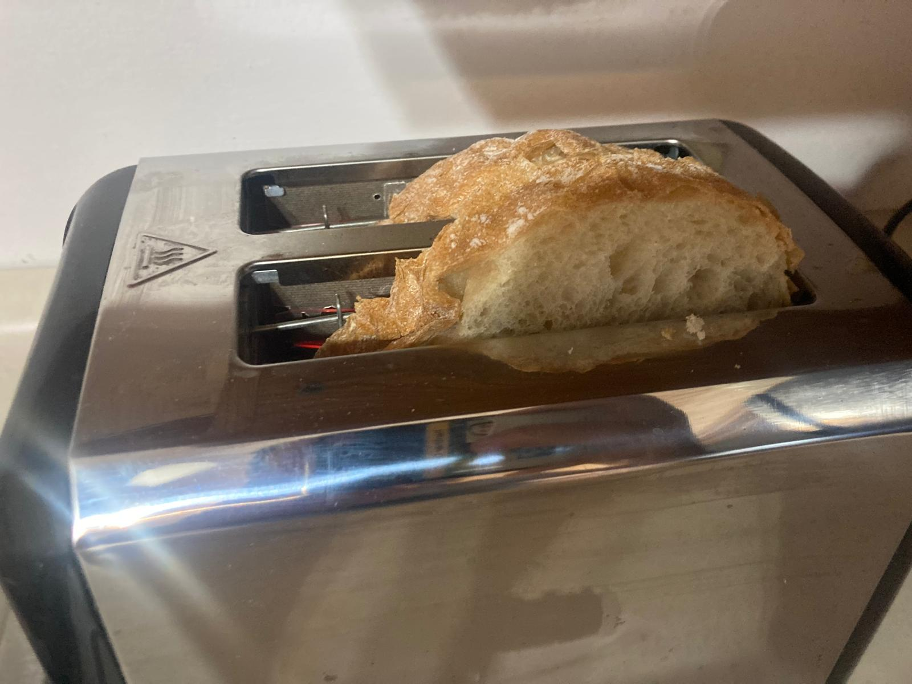
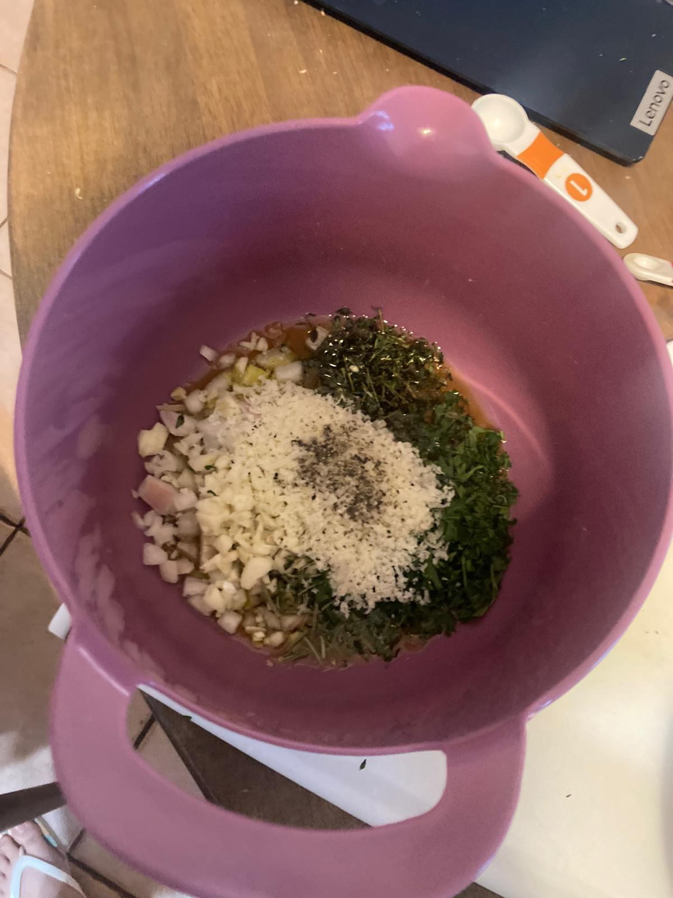
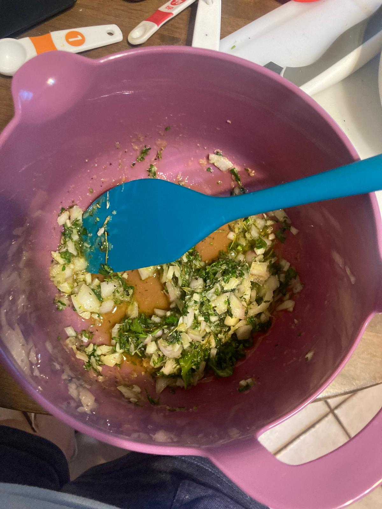
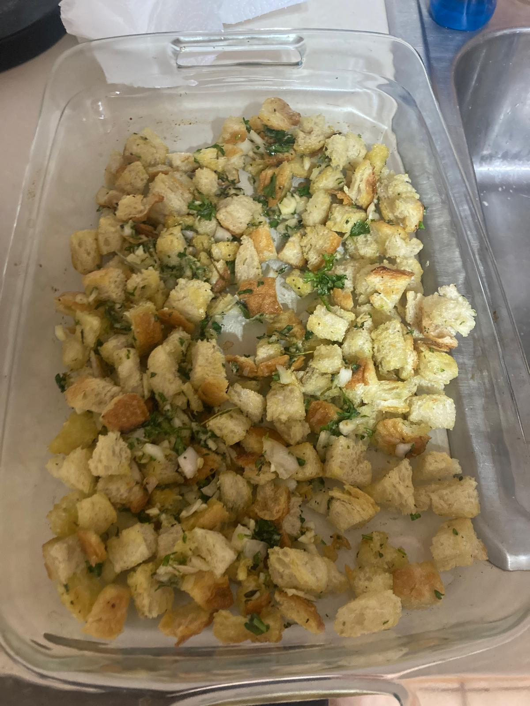
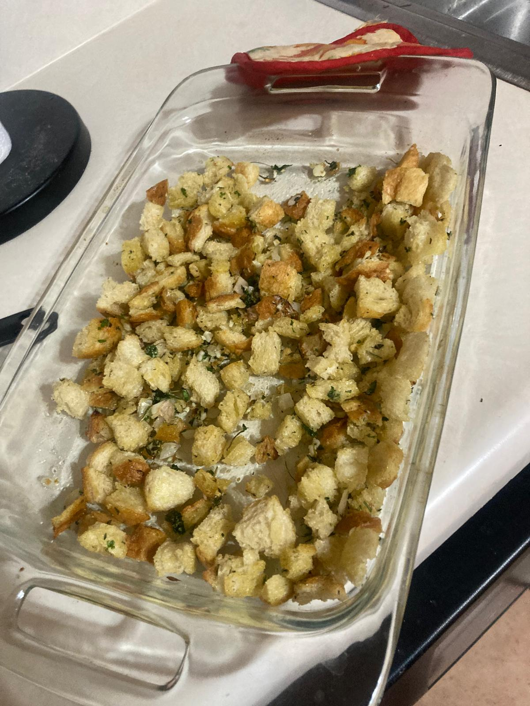

- Make the bread cubes. If your bread is not hard enough, toast it. A normal toaster will do but for me it worked best in the toaster oven. Mince the garlic, shallots, and chop the thyme, rosemary, and parsley. Grate the parmesan cheese.
- Preheat oven to 350 degrees Fahrenheit.
- Mix together the olive oil, shallot, garlic, thyme, parmesan, parsley, rosemary, and black pepper in a bowl.
- Toss in the bread cubes and mix them well until it is a uniform mixture.
- Put it all in an oven pan. Season evenly with the salt.
- Bake for 8min. Remove from oven and stir around. Rotate the pan and bake for 4min. Stir around, rotate pan, and bake for 2min. Let the pan cool to room temperature, the croutons will crisp up as they cool.

 

